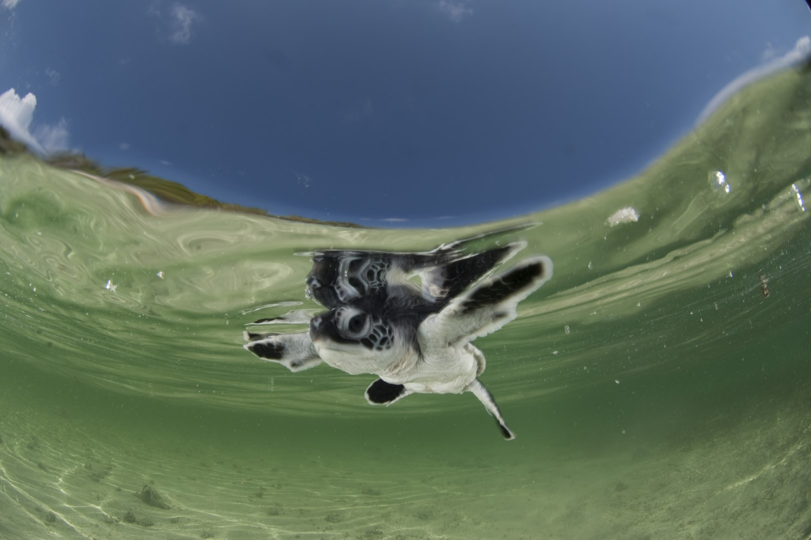
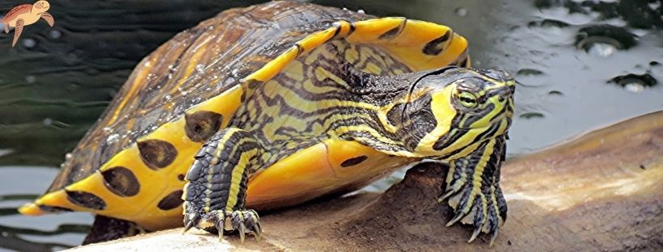

TÚ PUEDES AYUDAR: ¡REGALA UNA ADOPCIÓN!
Al adoptar simbólicamente una tortuga, le das un gran impulso a nuestro trabajo. Tu aporte ayuda a que los pescadores del Pacífico mejoren sus prácticas de pesca y protejan las playas donde anidan las tortugas. Por ejemplo, hacemos un intercambio de anzuelos tradicionales ‘tipo J’, en los que se enredan y mueren tortugas, tiburones y mantarrayas, por anzuelos circulares que reducen esta amenaza. Los humanos y la vida silvestre sí podemos coexistir, necesitamos hacerlo ver más.

TIPOS DE TORTUGAS
| # | Imagen | Especie | Carasterísticas |
|---|---|---|---|
| 1 |  | Tortuga de orejas rojas. | Conocida también como tortuga galápago de Florida es originaria de Centroamérica. Su rasgo más identificativo son las manchas de color rojo que tiene a ambos lados de la cabeza. Es omnívoro y puede medir entre 12 y 40 centímetros. En este caso, la hembra suele ser más grande que los machos. Se caracteriza por ser muy activa durante las horas crepusculares y por tomar el sol cuando más calienta para regular su temperatura. |
| 2 |  | Tortuga de orejas amarillas | Es una especie que proviene de México y Estados Unidos. Se distingue por las líneas amarillas que tiene en cabeza, patas y cola y por la forma aplanada y color oscuro de su caparazón. Suele medir entre 20 y 30 centímetros de largo. |
| 3 |  | Tortuga de Cumberland. | Al igual que en los casos anteriores se trata de una tortuga semiacuática. Se diferencia por tener un caparazón ovalado de color verde oliva y con manchas amarillas. Esta raza puede alcanzar los 21 centímetros de largo. |
Cuidados y alimentación de la tortuga de agua
Cuando una tortuga de agua entra en nuestra casa es importante suministrarle la alimentación adecuada a su tamaño y especie pero también acomodarla en un acuario adaptado a sus necesidades. Eso significa que su nuevo hogar debe reunir unas condiciones alimentarias, acuáticas y de temperatura concretas. Los aspectos que hay que tener en cuenta son los siguientes:
El acuario.
Debe estar dividido en dos zonas, una de agua, bastante amplia y con suficiente profundidad para que pueda nadar sin obstáculos y otra de tierra, para cuando nuestra tortuga necesite secarse al sol y descansar. Para facilitarle el acceso a ambos espacios es preferible que le coloquemos una rampa.
El agua.
Si no disponemos de filtro de agua se recomienda cambiar el agua cada semana para mantenerla limpia y salubre. En caso de que rellenemos el acuario con agua del grifo es imprescindible eliminar todo el cloro que contiene para que no dañe sus ojos ni su emblemático caparazón. En cuanto a la temperatura ideal, esta debe ser templada y mantenerse entre los 25 y 28 grados centígrados (como máximo.)
La iluminación
Deben tener acceso a luz solar directa, sin filtrar por cristales. Si no disponemos de luz solar, colocaremos luz artificial, luz UVB, para que su caparazón se nutra del calcio necesario y así, evitar en la medida de lo posible, que sufra enfermedades. También es importante colocar en la zona seca una lámpara UV-B especial y una bombilla que le proporcione calor.
La alimentación.
La mayoría de las tortugas son carnívoras cuando son jóvenes y evolucionan a dieta omnívora de adultas. Según la edad que tengan, la frecuencia para alimentarlas varía. Si son pequeñas deben comer una vez al día, si son de edad intermedia cada dos días y si son adultas sólo necesitan alimentarse tres veces por semana. En cautividad la dieta se basa en carne, como pollo, ternera o hígado, y de pescado troceado como mejillones o o sardinas con espina, aunque se pueden suplementar con piensos comerciales formulados para estas especies, evitando un exceso de gambas secas (gammarus).